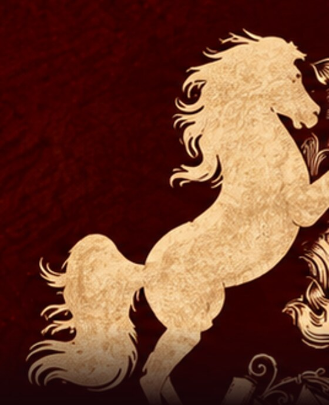
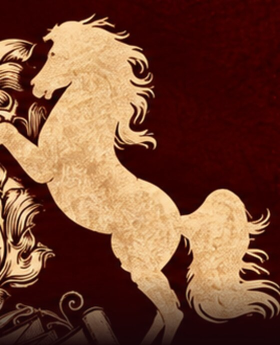

The Two Horses
The same pair of twin horsemen turns up in Sanskrit, in Greek, in Latvian, in Lithuanian and in a German forest, always doing the same job. Ours is the Sanskrit branch of that family.

A rumour four thousand years old
Long before Sanskrit, Greek, Latin and Lithuanian became separate languages they were one language, spoken somewhere north of the Black Sea by people who had just learned what a horse could do. Nobody wrote their stories down. We know them the way a linguist knows a lost word: by lining up what survived in the daughter languages and reading off what they share.
One of the figures that comes back is a pair of twin horsemen who arrive at the last possible moment. In India they are the Ashwins, the ones who have horses. In Lithuania they are the Ašvieniai, built from the very same ancient word: ashwa in Sanskrit, and ašva in the Baltic spelling, both meaning horse. The Vedic poets call theirs the grandsons of Dyaus, the sky. The Lithuanians call theirs the little sons of Dievas, the sky. The Latvians say Dieva Dēli, the sons of Dievs. The Greeks say Dioskouroi, the boys of Zeus.
Four traditions that had not been in contact for three thousand years, saying the same sentence.
Eleven things they have in common
- Two fathers. One brother is born mortal and one is not.
- One name for two. They are counted as a pair, and often rhyme.
- Horses. They own them, drive them, or are them.
- A woman at the centre. A mother, or a sister, or the sun's daughter.
- Rescue at sea. Whoever is going under, they come.
- Healing. They are the ones you call when it is medical.
- Stars. They are the morning star and the evening star.
- Oaths. Agreements between two parties are witnessed by them.
- Youth. They never appear as old men.
- Mischief. Not one of these traditions calls them well behaved.
- Help in a losing fight. Late, but in time.
The list comes from the folklorist Donald Ward, who set the surviving traditions side by side and wrote down what kept repeating. Read it once and the crest stops being decoration.
The cousins
Different names, different centuries, one job description.
Ashwins
Named 398 times in the Rigveda, with more than fifty hymns of their own. Physicians, horsemen, and strictly a pair: the oldest hymns never give them separate names. Their chariot is said to be swifter than the mind.
Ašvieniai
They pull the carriage of the sun. On houses they are carved as two horse heads crossed at the point of the gable, called žirgeliai, little horses, and put there to protect what lives under the roof. The same heads are cut into beehives, harnesses and the ends of beds.
Dieva Dēli
The folk songs keep sending them to the water. The sun goes down into the sea and the brothers row out in a golden boat to bring her back up. In between they mow the meadows of the sky and court the daughters of the sun.
Castor and Pollux
One a horseman, one a boxer. One born mortal, one not. Rome put their temple in the Forum after a battle it believed they had turned, and every fifteenth of July eighteen hundred horsemen rode past it. The two stars of Gemini carry their names still.
The Alcis
Around the year 98 Tacitus reports a grove of immemorial sanctity somewhere east of the Roman frontier, where two young brothers are honoured and no image of them is kept. He says a Roman would call them Castor and Pollux, then adds, carefully, that nobody there had borrowed them from abroad.
Hengist and Horsa
The two the English put at the start of their own history, landing in Kent and founding a kingdom. Scholars read them as the pair in local dress, and the giveaway is the names. In Old English they are not names at all. They mean stallion and horse.
Two names at the bottom of a contract
The oldest surviving mention of the twins anywhere is not a poem. It is a treaty pressed into clay around 1350 BC between a Hittite king and a king of Mitanni, and the Nasatya twins are in the list of powers called to witness it and see that it is kept. Of all the things the pair are said to be good for, protecting an agreement between two parties is the one that got written down first.
One for medicine, one for science
The standard description of the Ashwins hands them an odd set of departments: medicine, health, healing, the sciences, and the hour before sunrise. Two riders, one chariot, two kinds of knowledge in harness.

The entity of medicine
The Rigveda keeps something close to a casualty list for these two. Vishpala loses a leg in the night, in Khela's battle, and they fit her an iron one so that she can run again; the hymn is about three thousand years old and is routinely called the first prosthesis in literature. They take the age off old Chyavana the way a man takes off a coat, and give him back his youth. They return Rijrashva's sight after his father blinds him. They lift Bhujyu out of the open sea, abandoned there, in ships that fly and do not get wet.
Their name says it too. Nasatya is built on an ancient root for bringing someone home safely, and that root surfaces again at the other end of the family, in the Gothic verb nasjan: to save, and to heal.
Even their star is clinical. The lunar mansion named after them, Ashwini, is the first of all of them, drawn as a horse's head and figured as a beehive, and the old rule is that it is the right hour to begin anything precise or delicate.
Nafees Fahmi Ali has been a physician for close to eighteen years, and writes the words.

The entity of science
The other half of the list is knowledge, and the way the twins get theirs is the best story in the file. A certain teaching was being kept from them, under a standing threat: the head of anyone who passed it on would burst. They went to the sage Dadhichi, who agreed, on one condition. When the penalty fell due, they were to take the horse's head they had ready and put it on him. He taught them. His head burst. They carried out the procedure, and he lived.
In another telling what they were after is the madhu-vidya, the honey doctrine, which is presumably why their own star is drawn as a hive. Either way, as an origin story for a discipline it is hard to beat. A transplant is performed, and not because anyone is ill. It is done to get a piece of knowledge out of the place where it was being held.
They keep time, as well. Their chariot is swifter than the mind, their mansion opens the year, and its older name is ashwayuja, the harnessing of horses.
Syed Mehedi Hasan works on precision calculations in particle physics, and writes the music.
Neither half is the senior one. Medicine and science run on the same two instincts, look closely and then intervene, and a song is made the same way. We took the name for the horses and the twins and the sound of it. The rest of the fit we found afterwards, and it kept getting better the further we read.
Two lights on the mast
Sailors in the ancient Mediterranean did not consider the twins a matter of belief. They had seen them. In a thunderstorm a cold flame will sometimes stand on a masthead and hiss, and Pliny wrote the rule down in the first century: one flame is a threat, and the sailors call it Helen, after the twins' sister. Two flames mean the brothers have come aboard, and the ship will live.
It is a corona discharge. An electric field of roughly a hundred kilovolts per metre pulls the air apart into plasma at any sharp point, and the nitrogen and oxygen give it the blue, by the same mechanism that lights a neon tube. In 1751 Benjamin Franklin reasoned that a pointed iron rod would produce it deliberately. The two lights on the mast became the lightning rod.
There is a second one of these. In the Vedic, Greek and Baltic traditions alike the twins are the morning star and the evening star, and those two are one planet. The ancient world took a long time to establish it, and the Greeks gave Pythagoras the credit. Two entities, one body, and no way to tell from the ground. For a project run by two people under one name, that is a better emblem than anything we could have commissioned.
Neither rears higher than the other
The Greek version states the terms most plainly. Castor was born mortal and Pollux was not. When Castor was killed, Pollux would not take the sky on his own and asked to split what he had, and the settlement was that the two of them would hold one immortality between them and alternate, turn and turn about, without end. Neither brother is ever again fully what he was alone. In the story this is not presented as a sacrifice. It is presented as obvious.
And the pairs are never two copies. Across the whole family one brother tends to act and the other to mend, one is the fighter and the other the healer. They are a pair of opposites put in the same harness so that they pull in one direction.
Here one of us writes music and the other writes words. On about half the songs the words come first and the music is built to carry them, and on the rest the melody is already there and the words are written into it. Neither order is the correct one. The song exists when both horses have run.

Still nailed above the door
In Lithuania the twins are two horse heads crossed at the ridge of the roof, cut from a single board. They are called the little horses, and they are up there to keep the house safe. Thousands of years after the language that named them broke into a dozen languages, people are still fixing the two horses above the place where their family sleeps. Ours went on a record sleeve. It is the same instinct.
Where this comes from. The Rigveda, in the Jamison and Brereton translation, and the hymns to the Ashwins in Griffith. Tacitus, Germania 43. Pliny, Natural History 2.101. For the comparative frame: M. L. West, Indo-European Poetry and Myth; Mallory and Adams, Encyclopedia of Indo-European Culture; and Donald Ward on the divine twins in Germanic tradition.
Short versions of all of it, with the references attached: the Ashwins, the divine twins, Castor and Pollux, the Ašvieniai, the Dieva Dēli, and in Bangla, অশ্বিনীকুমার.